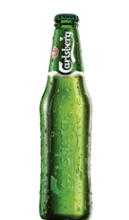

| Beer Image |
Name |
Description |
Price |
 |
Corona Extra 330ml |
Corona Extra is a pale lager produced by Cerveceria Modelo in Mexico for domestic distribution and export to all other countries besides the United States |
$1.90 |
 |
Stella Artoisa 500ml |
Stella Artois is a Belgian Pilsner Lager Beer which uses Saaz Hops for both a richness in taste and goldness in appearance The roots of Stella Artois' rich brewing heritage can be traced back as early as 1366, to the town of Leuven, Belgium. |
$4.90 |
|  |
Carlsberg 330ml |
Carlsberg is a European Pale Lager ABV: 5% Brand Origin: Denmark At Carlsberg, the pursuit of better beer is in our DNA. More than 100 years after our founder J.C. Jacobsen mastered the art of brewing great Pilsner, we're still looking for ways to improve our beer |
$3.90 |
 |
Heineken 330ml |
Heineken Lager Beer ( Dutch: Heineken Pilsener ), or simply Heineken ( pronounced [ˈɦɛinəkə (n)]) is a pale lager beer with 5.3% alcohol by volume produced by the Dutch brewing company Heineken N.V.. Heineken beer is sold in a green bottle with a red star. |
$2.90 |